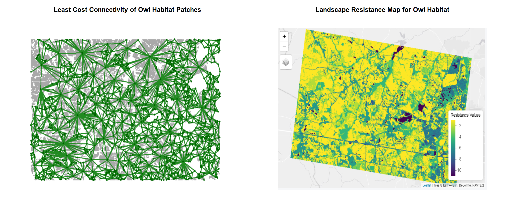
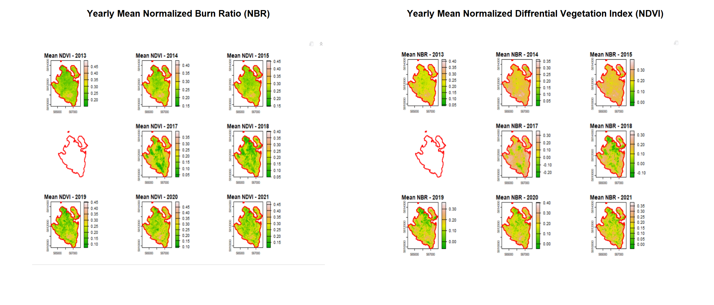
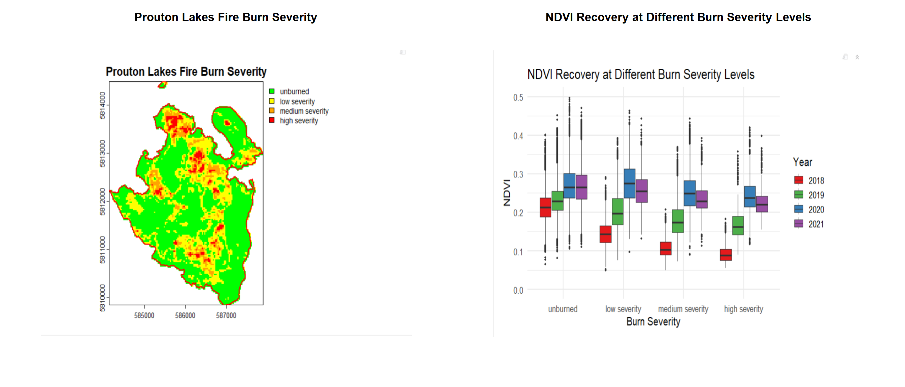
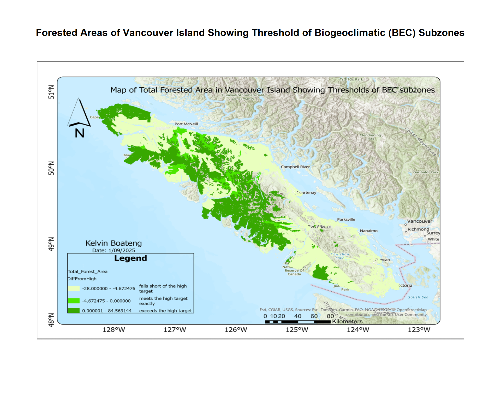
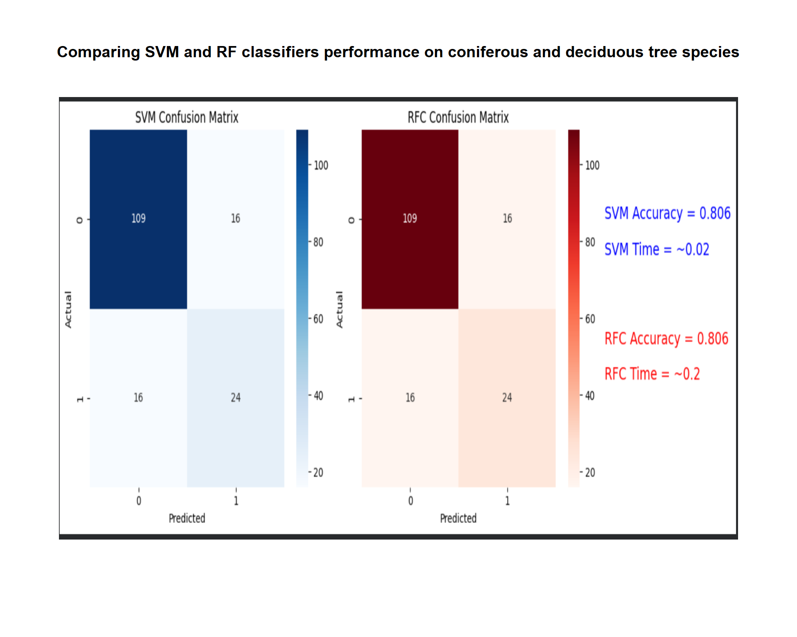
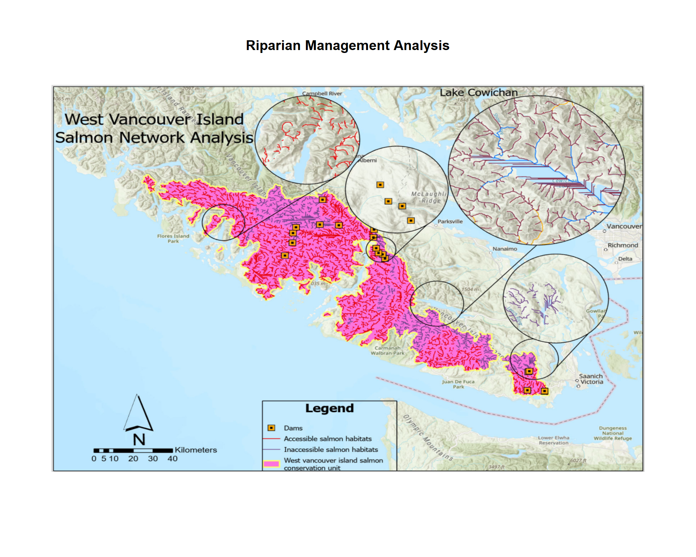

Technical Labs
Landscape Connectivity Analysis for Species Movement
This project applied landscape ecology principles to evaluate structural and functional connectivity across a heterogeneous landscape using spatial analysis and network-based modeling in R. Using National Land Cover Data, landscape configuration was analyzed to understand how habitat distribution and matrix composition influence species movement and connectivity. Landscape metrics were used to quantify patch structure and spatial patterns, while network analysis techniques were employed to model potential movement pathways across the landscape. The project incorporated resistance-based modeling to simulate species-specific movement scenarios for ducks and spotted owls, accounting for differences in habitat preference and dispersal ability. Graphs and grains of connectivity models were developed across multiple thresholds to assess connectivity sensitivity at different spatial scales. The results highlight how landscape structure, habitat quality, and movement assumptions interact to shape ecological connectivity, demonstrating the value of connectivity modeling for conservation planning and landscape-scale environmental decision-making
Key methods and Data
Landscape ecology and connectivity theory, Structural and functional connectivity analysis, Network analysis, National Land Cover Data (NLCD)
Tools
Rstudio (landscapemetrics- Core area metric, Aggregation metric, Area and Edge metric)
Analysis of Fire Burn Severity and Post-Fire Vegetation Recovery Using Landsat Time-Series
The Prouton Lakes wildfire (2017) in the Alex Fraser Research Forest, BC, was examined for burn intensity and post-fire vegetation recovery using Landsat 8 surface reflectance time-series (2013-2021). Burn severity was assessed using the normalized burn ratio (NBR) and delta NBR (dNBR), which allowed impacted areas to be classified as unburned, low, medium, or high severity. Vegetation recovery was assessed by observing NDVI trends across burn severity classes for four years after the fire. Time-series composites, supervised classifiers, and statistical visualizations were used to investigate regional patterns of fire effects and vegetation recovery. This study highlights the use of remote sensing and spatial analysis in landscape ecology to aid in wildfire impact assessment and ecosystem management decisions.
Key methods and Data
Remote sensing analysis using Landsat 8 OLI Level-2 surface reflectance data, Vegetation and burn indices: NDVI, NBR, dNBR, Time-series processing and compositing for multiple years, Raster pre-processing: masking, cropping, and QA filtering
Tools
Rstudio (raster, terra, ggplot2)


Cartographic Modelling of Old-Growth Forests on Vancouver Island With Forest Inventories
Although old-growth forests provide important ecological, biological, and wood resources, they are under threat from logging and human disturbances. This lab investigates the distribution of prospective old-growth stands on Vancouver Island, British Columbia, utilizing VRI data, land ownership layers, human disturbance data, and landscape units. Forest polygons were filtered to include managed crown forests, which were then divided into Seral Stages based on age and BEC zone, and human disturbances were adjusted. The percentage of old-growth forest was estimated for each Landscape Unit-BEC combination and compared to provincial targets. Cartographic modelling was used to depict the data, resulting in maps and tables that show locations that exceeded or fell short of the old-growth target. This workflow demonstrates how GIS and Python-based spatial analysis can help with forest management and conservation planning.
Key methods and Data
Subsetting VRI polygons to managed forests and extracting relevant attributes, Identifying crown forests using land ownership and human disturbance layers, Assigning Seral Stages (Early, Mid, Mature, Old) based on BEC zones and projected stand age; resetting stages in disturbed areas, Vegetation Resource Inventory 2024 (vancouver_island_vri), Generalized Forest Cover Ownership (vancouver_island_own)
Tools
ArcGIS Pro, Python, SQL

Machine Learning Techniques to Classify Deciduous or Coniferous Trees in the Petawawa Research Forest
Accurate mapping of coniferous and deciduous tree species is essential for effective forest management, ecosystem monitoring, and long-term environmental planning. These forest types differ in growth patterns, ecological functions, and carbon storage potential, making their spatial delineation critical for decision-making. Advances in remote sensing and machine learning have created new opportunities to classify forest composition using spectral and structural information derived from satellite and aerial imagery. This project evaluated the performances of machine-learning classifiers (Random Forest (RF) and Support Vector Machine (SVM)), for distinguishing coniferous and deciduous trees within the Petawawa Research Forest. Both models were trained using the same set of predictor variables and reference data so that their performance could be compared fairly. Accuracy was assessed using classification metrics, including overall accuracy, precision, recall, and confusion matrices, along with model computation time. This direct comparison highlights how Random Forest and Support Vector Machine differ in both classification performance and efficiency, providing practical insight into their suitability for conifer and deciduous tree mapping in Canadian forest landscapes
Key methods and Data
Supervised machine learning classification of forest cover into coniferous and deciduous classes, Training and testing of two classifiers: Random Forest and Support Vector Machine, Comparison of model performance based on both classification accuracy and computation time, Airborne LiDAR
Tools
Arcgis Pro, Python, Scikit learn

Terrain-Based Stream Network Delineation and Riparian Reserve Mapping in the Nahmint Watershed, British Columbia
Digital terrain analysis and hydrological modelling were employed to delineate stream networks, determine stream order, and set riparian reserve buffers within the Nahmint watershed in British Columbia. A Digital Elevation Model (DEM) served as the foundation for modelling surface flow processes and deriving watershed characteristics through raster-based hydrological tools. The DEM was initially preprocessed to eliminate sinks and ensure continuous flow routing across the landscape. Flow direction and flow accumulation rasters were generated using the D8 algorithm, and a stream network was extracted using a specified accumulation threshold. Stream order was assigned using the Strahler classification method, and raster stream outputs were converted into vector features to facilitate further spatial analysis. Stream gradients were calculated from elevation differences along individual segments. Using these gradient values and observed channel characteristics, streams were classified according to provincial riparian management guidelines (S1–S6). Corresponding buffer distances for Riparian Reserve Zones and Riparian Management Zones were then applied based on stream class criteria. Watershed boundaries and contour lines were also derived to support terrain interpretation and contextual analysis. The results highlight the effectiveness of DEM-based hydrological modelling for systematic stream delineation and standardised riparian buffer mapping in forested environments.
Key methods and Data
Watershed delineation, DEM preprocessing, Stream network extraction using accumulation threshold, Contour generation, Digital Elevation Model (DEM) of the Nahmint watershed, Riparian Reserve and Management Zone buffer generation
Tools
ArcGIS Pro (Spatial Analyst Extension), QGIS for DEM access and export

Estimating Forest Attributes Using Airborne LiDAR Metrics and Statistical Modeling Approaches
Airborne LiDAR data were processed to derive terrain models, canopy-structure metrics, and wall-to-wall estimates of net stem volume for the Malcolm Knapp Research Forest (MKRF). Multiple. las tiles were managed using a LAScatalog workflow in R to enable efficient processing of the full dataset. Duplicate points were identified and removed before analysis. A Digital Elevation Model (DEM) was generated from ground-classified returns using TIN interpolation and subsequently used to normalize point cloud heights. A Canopy Height Model (CHM) was derived from normalized data to evaluate vegetation structure and confirm data quality. Circular forest plots were extracted from the normalized point cloud, and standard LiDAR metrics describing vegetation height, cover, and structural complexity were calculated for each plot using first returns above 2 m. These metrics were combined with field-measured net stem volume data to develop ordinary least squares regression models. A forward variable selection approach was applied to identify a simple and efficient predictive model. The final model was then applied across the entire study area by calculating pixel-level LiDAR metrics and generating a spatially continuous estimate of stem volume. Although the resulting model demonstrated moderate explanatory power, limitations associated with temporal mismatches between field and LiDAR data, variable-radius plot design, and limited structural variability among plots likely constrained predictive accuracy. The lab demonstrates the complete workflow for LiDAR-based Forest attribute estimation, from raw point cloud processing to spatial model application.
Key methods and Data
Quality control of point cloud data, Digital Elevation Model (DEM) generation using ground-classified returns, Height normalization of LiDAR point clouds using DEM subtraction, Wall-to-wall application of the selected model using pixel-based LiDAR metrics, Airborne LiDAR point cloud data (.las format) covering Malcolm Knapp Research Forest (MKRF), RGB aerial orthophoto (GeoTIFF format)
Tools
Rstudio (lidR, terra, tidyverse)

Spatial Statistics to Enhance Classical Statistical Modelling of Spatial Data
Spatial statistics enhances classical statistical modelling by explicitly accounting for location-dependent relationships in georeferenced data. Incorporating spatial autocorrelation and measurement scales allows classical methods such as simple linear regression, ANOVA, and multiple linear regression to be applied more effectively in spatial contexts. Geostatistical methods, including kriging and spatial interpolation, enable accurate prediction at unobserved locations and reconstruction of continuous surfaces, improving model reliability and reducing bias. Integrating spatial considerations uncovers patterns and dependencies that classical methods alone may overlook, providing a robust framework for exploratory analysis, inference, and prediction in complex spatial datasets.
Skills Acquired
Managed and analyzing georeferenced spatial data (geostatistical, areal, point patterns).
Assessed and interpreting spatial autocorrelation.
Applied SLR, ANOVA, and MLR in spatial contexts.
Performed data transformations and residual diagnostics for spatial models.
Conducted kriging and geostatistical interpolation for spatial prediction.
Effective Communication and Multidisciplinary Knowledge for Sustainable Natural Resource
Effective management of natural resources requires not only technical expertise but also the ability to integrate diverse knowledge systems and communicate insights clearly to stakeholders. Through this MGEM module, I engaged with sustainable resource management concepts, explored traditional and scientific knowledge integration, and applied professional communication strategies to convey complex information effectively. Emphasis was placed on understanding spatial variability, stakeholder perspectives, and interdisciplinary approaches to decision-making. The learning experience strengthened both analytical and communication competencies, preparing me to contribute meaningfully to sustainable natural resource initiatives.
Skills Acquired
Integration of multidisciplinary knowledge for resource management.
Professional communication with diverse stakeholders.
Spatial data interpretation and analysis.
Collaborative problem-solving and decision-making.